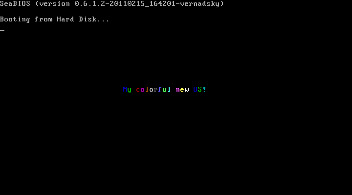

A minimal boot sector tutorial The natural first step of building an operating system is to find a way to run programs on “bare hardware”. The task turns out to be quite easy despite its daunting first impression. After researching on the net and trying out various tutorials, I found all of them overly complicated. Most of them assume interfacing with a C-like language and implementing a Unix-like system, but C and Unix are not the only story about operating systems design. A boot sector tutorial should teach nothing more than how to boot a computer. After learning the good parts from the tutorials and applying my own simplifications, I arrived at my first boot sector. It is very simple and does very little — it just boots the machine and displays a colorful banner — but it illustrates the only things you need to know for booting a computer. The code is very short — only 21 lines of code excluding comments and blank lines. org 7C00H ; the program will be loaded at 7C00H
start:
mov eax, string_start
mov ch, 1 ; ch contains color of text
mov ebx, 0B8000H + 718H ; B8000H is VGA memory
; 718H is offset to approx center
print:
mov cl, [eax] ; load char into cl
mov [ebx], cx ; store [color:char] from cx into VGA
add ch, 1 ; change color to (ch+1) mod 16
and ch, 0x0F
add eax, 1 ; advance string pointer
add ebx, 2 ; advance VGA pointer
cmp eax, string_end ; until the end of string
jg stop
jmp print
stop:
jmp stop ; infinite loop after printing
string_start db 'My colorful new OS!'
string_end equ $
times 510-($-$$) db 0 ; pad remainder of boot sector with 0s
dw 0xAA55 ; standard PC boot signature
It is in NASM syntax and needs nasm to be assembled into machine code. After that it can be booted by QEMU, a processor emulator. The only two necessary command lines are (assuming the code is stored in a file named myfirst.asm): nasm -f bin -o myfirst.bin myfirst.asm qemu -hda myfirst.bin Of course, you can also burn the disk image (myfirst.bin) onto a CD and boot a real machine from it. |